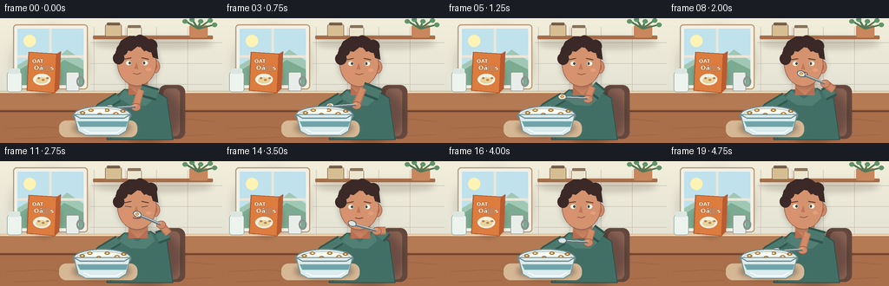
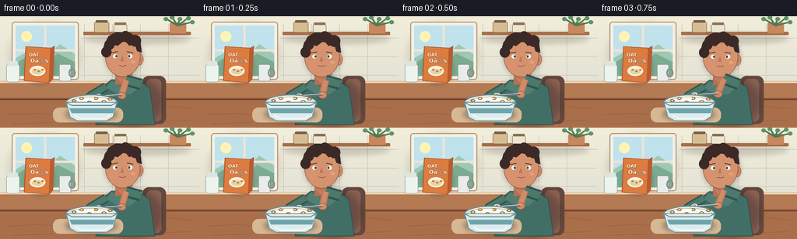

CODING AGENTS AS PIXEL WORLD MODELS
traex/GPT-5.6-Sol · motion_rationality_0018
点击播放 · 原生 RGB 像素
逐轮保存的候选
回放视频、检查图与代码变化。
每份候选均可单独播放。实际图片检查记录在下方工具轨迹中。
候选 01播放与检查图
点击播放 · 原生 RGB 像素


展开代码变化
--- 上一保存版本
+++ 本次保存版本
@@ -0,0 +1,306 @@
+from pathlib import Path
+import math
+import numpy as np
+from PIL import Image, ImageDraw, ImageFont, ImageFilter
+import artifact_io
+
+W, H, N = 256, 144, 20
+S = 3
+SW, SH = W*S, H*S
+HERE = Path(__file__).resolve().parent
+
+
+def sc(v):
+ if isinstance(v, (tuple, list)):
+ return tuple(int(round(x*S)) for x in v)
+ return int(round(v*S))
+
+
+def ease(x):
+ x = max(0.0, min(1.0, x))
+ return x*x*(3-2*x)
+
+
+def lerp(a,b,t): return a+(b-a)*t
+
+def mixpt(a,b,t): return (lerp(a[0],b[0],t), lerp(a[1],b[1],t))
+
+
+def rr(d, box, r, fill, outline=None, width=1):
+ d.rounded_rectangle(sc(box), radius=sc(r), fill=fill, outline=outline, width=sc(width))
+
+def el(d, box, fill, outline=None, width=1):
+ d.ellipse(sc(box), fill=fill, outline=outline, width=sc(width))
+
+def poly(d, pts, fill, outline=None):
+ d.polygon([sc(p) for p in pts], fill=fill)
+ if outline:
+ d.line([sc(p) for p in pts+[pts[0]]], fill=outline, width=sc(1), joint='curve')
+
+def ln(d, pts, fill, width=1):
+ d.line([sc(p) for p in pts], fill=fill, width=sc(width), joint='curve')
+
+
+def font(size, bold=False):
+ p = '/usr/share/fonts/truetype/dejavu/DejaVuSans-Bold.ttf' if bold else '/usr/share/fonts/truetype/dejavu/DejaVuSans.ttf'
+ return ImageFont.truetype(p, sc(size))
+
+
+def shadow_ellipse(im, box, color=(32,29,28,80), blur=4):
+ lay = Image.new('RGBA', (SW,SH), (0,0,0,0)); q=ImageDraw.Draw(lay)
+ q.ellipse(sc(box), fill=color)
+ im.alpha_composite(lay.filter(ImageFilter.GaussianBlur(sc(blur))))
+
+
+def draw_background(im):
+ # soft morning wall gradient
+ arr = np.zeros((SH,SW,4), dtype=np.uint8)
+ for y in range(SH):
+ yy=y/(SH-1)
+ if yy < .69:
+ q=yy/.69
+ c=(int(lerp(242,226,q)), int(lerp(238,225,q)), int(lerp(219,211,q)),255)
+ else:
+ q=(yy-.69)/.31
+ c=(int(lerp(173,105,q)), int(lerp(130,76,q)), int(lerp(92,58,q)),255)
+ arr[y,:,:]=c
+ im.alpha_composite(Image.fromarray(arr,'RGBA'))
+ d=ImageDraw.Draw(im)
+ # window and sunlight
+ shadow_ellipse(im, (13,9,102,91), (92,76,54,40), 5)
+ rr(d,(15,7,101,82),4,'#f4f0e6','#b69b76',1.3)
+ rr(d,(20,12,96,77),1,'#bfe2ec')
+ # sky and distant soft hills
+ poly(d,[(20,54),(41,42),(59,53),(77,36),(96,49),(96,77),(20,77)],'#9fc8b4')
+ poly(d,[(20,61),(36,51),(55,62),(74,48),(96,59),(96,77),(20,77)],'#7cab91')
+ el(d,(27,19,41,33),'#fff3b5')
+ ln(d,[(58,12),(58,77)],'#eee4d6',3)
+ ln(d,[(20,44),(96,44)],'#eee4d6',3)
+ # tiled backsplash to right
+ for x in [108,144,180,216]: ln(d,[(x,10),(x,85)],(203,196,180),.6)
+ for y in [28,52,76]: ln(d,[(104,y),(256,y)],(203,196,180),.6)
+ # shelf
+ shadow_ellipse(im,(107,22,245,36),(54,39,30,45),3)
+ rr(d,(107,20,245,24),1,'#a76d48')
+ # jars and plant
+ rr(d,(121,7,140,21),2,'#d7bd92','#82684e',.8); rr(d,(123,5,138,8),1,'#755f4b')
+ rr(d,(146,10,163,21),2,'#eee5cf','#8e7961',.8); rr(d,(147,8,162,11),1,'#88725a')
+ rr(d,(218,8,239,22),2,'#c8875c')
+ for end in [(213,3),(221,1),(231,3),(242,2),(247,7)]:
+ ln(d,[(228,12),end],'#507855',2)
+ el(d,(end[0]-3,end[1]-2,end[0]+3,end[1]+3),'#609468')
+ # back counter
+ poly(d,[(0,84),(256,84),(256,107),(0,107)],'#b47a53')
+ ln(d,[(0,85),(256,85)],'#f1d8b7',2)
+ # cereal box as contextual cue
+ shadow_ellipse(im,(31,46,70,88),(42,31,26,50),3)
+ poly(d,[(33,39),(65,41),(63,86),(31,83)],'#dc7c3e','#a8522b')
+ poly(d,[(65,41),(70,38),(68,81),(63,86)],'#b95b31')
+ d.text(sc((37,46)),'OAT',font=font(6,True),fill='#fff8dc',stroke_width=sc(.3),stroke_fill='#8e4228')
+ d.text(sc((39,53)),'Oâs',font=font(7,True),fill='#fff8dc',stroke_width=sc(.3),stroke_fill='#8e4228')
+ el(d,(38,64,58,77),'#f6efe0')
+ el(d,(41,68,55,75),'#e8d39d')
+ for x,y in [(43,68),(48,70),(53,68)]: el(d,(x,y,x+3,y+2),'#b97f42')
+ # mug and small milk bottle
+ rr(d,(76,62,91,84),2,'#e8ede9','#88908e',.8); el(d,(88,67,97,79),None,'#88908e',2)
+ rr(d,(8,62,25,85),3,'#edf3ed','#8ca49c',.8); rr(d,(10,58,23,64),2,'#dce6e1')
+ # table foreground
+ poly(d,[(0,105),(256,105),(256,144),(0,144)],'#a96e4a')
+ ln(d,[(0,107),(256,107)],'#6f432e',2)
+ # subtle wood grain
+ for pts in [[(7,127),(50,125),(82,128)],[(178,118),(214,116),(247,119)],[(16,139),(67,137)],[(197,136),(245,134)]]:
+ ln(d,pts,'#8f593d',.6)
+
+
+def motion(i):
+ # One clearly readable scoop -> mouth -> pause/chew -> return cycle.
+ if i <= 3:
+ # stir and scoop within bowl
+ t=i/3
+ head=(126+2*math.sin(i*1.5),103-2*ease(t))
+ amount=1.0
+ elif i <= 9:
+ t=ease((i-3)/6)
+ head=mixpt((128,101),(157,61),t)
+ amount=1.0
+ elif i <= 12:
+ # spoon held at lips; small insertion motion
+ t=(i-9)/3
+ head=(157+1.2*math.sin(math.pi*t),61)
+ amount=max(0.0,1-t*1.4)
+ elif i <= 18:
+ t=ease((i-12)/6)
+ head=mixpt((157,61),(128,102),t)
+ amount=0.0
+ else:
+ head=(126,103)
+ amount=0.0
+ return head, amount
+
+
+def draw_person(im,i,spoon_head):
+ d=ImageDraw.Draw(im)
+ # body breath and tiny forward lean when spoon nears mouth
+ proximity=max(0,1-math.dist(spoon_head,(157,61))/46)
+ bob=0.55*math.sin(i*.46)
+ hy=bob+1.2*proximity
+ # chair behind
+ rr(d,(183,77,213,139),8,'#65483d')
+ rr(d,(188,81,207,136),6,'#876052')
+ # torso shadow
+ shadow_ellipse(im,(128,79,208,143),(44,29,31,75),4)
+ # torso / green sweater
+ poly(d,[(143,82+hy),(173,80+hy),(192,92),(199,140),(123,140),(127,96)],'#426f65','#2f514c')
+ # sweater light panel and collar
+ poly(d,[(143,83+hy),(158,92+hy),(174,82+hy),(178,92),(167,101),(150,100),(137,92)],'#527f73')
+ ln(d,[(131,111),(127,139)],'#31564f',1)
+ # neck
+ rr(d,(148,69+hy,170,88+hy),6,'#c98361')
+ poly(d,[(148,79+hy),(159,88+hy),(170,78+hy),(170,88+hy),(148,88+hy)],'#b86f53')
+ # head shadow then head
+ shadow_ellipse(im,(134,24+hy,183,79+hy),(53,36,30,60),3)
+ # ears behind
+ el(d,(174,48+hy,184,63+hy),'#cf8966','#9f604b',.7)
+ el(d,(176.5,52+hy,181,59+hy),'#b96e55')
+ # face
+ el(d,(135,25+hy,180,78+hy),'#d4936e','#8d5948',.8)
+ # warm facial shading
+ el(d,(140,55+hy,151,68+hy),(218,145,111,110))
+ # hair silhouette
+ poly(d,[(136,50+hy),(133,39+hy),(139,26+hy),(149,20+hy),(167,21+hy),(180,31+hy),(182,47+hy),(176,45+hy),(173,35+hy),(166,38+hy),(160,31+hy),(151,38+hy),(142,36+hy)],'#3b2927')
+ # loose curls
+ for b in [(134,30,147,43),(143,21,158,35),(154,19,168,33),(166,24,181,39),(130,39,143,53)]:
+ el(d,(b[0],b[1]+hy,b[2],b[3]+hy),'#3b2927')
+ # brows
+ ln(d,[(143,47+hy),(151,45.5+hy)],'#5a3931',1.2)
+ ln(d,[(163,45.5+hy),(171,47+hy)],'#5a3931',1.2)
+ # blink once while chewing
+ blink = i in (11,12)
+ if blink:
+ ln(d,[(144,51+hy),(151,52+hy)],'#573c35',1)
+ ln(d,[(163,52+hy),(170,51+hy)],'#573c35',1)
+ else:
+ el(d,(145,49+hy,151,54+hy),'#f8f3e8')
+ el(d,(164,49+hy,170,54+hy),'#f8f3e8')
+ el(d,(148,50+hy,150.5,53+hy),'#3e4b45')
+ el(d,(164.5,50+hy,167,53+hy),'#3e4b45')
+ # nose
+ poly(d,[(157,51+hy),(154.5,58+hy),(159,58.5+hy)],'#bd765a')
+ # mouth reacts to approaching spoon / chewing
+ if 8 <= i <= 10:
+ el(d,(152.5,61+hy,162,67+hy),'#713d3d')
+ el(d,(154,62+hy,161,64.5+hy),'#f0d8c7')
+ elif 11 <= i <= 14:
+ # closed chewing smile, shifted subtly
+ yy=64+hy+(0.5 if i%2 else 0)
+ ln(d,[(153,yy),(157.5,yy+1),(162,yy)],'#7e4544',1.2)
+ else:
+ ln(d,[(153,63.5+hy),(158,64.5+hy),(162,63+hy)],'#874a48',1.1)
+ # cheek highlight
+ el(d,(168,57+hy,174,61+hy),(232,157,124,120))
+ return hy
+
+
+def ik_elbow(shoulder,wrist,side=1):
+ sx,sy=shoulder; wx,wy=wrist
+ dx,dy=wx-sx,wy-sy; dist=max(1,math.hypot(dx,dy))
+ mx,my=(sx+wx)/2,(sy+wy)/2
+ # elbow bends downward/outward, reduced when extended
+ nx,ny=-dy/dist,dx/dist
+ bend=min(17, 8+dist*.22)
+ return (mx+nx*bend*side,my+ny*bend*side)
+
+
+def draw_arms_and_spoon(im,i,spoon_head,amount,hy):
+ d=ImageDraw.Draw(im)
+ # Left arm stabilizes the bowl; static but natural.
+ left_sh=(136,91); left_el=(116,103); left_wr=(111,112)
+ ln(d,[left_sh,left_el,left_wr],'#31584f',12)
+ ln(d,[left_sh,left_el,left_wr],'#4b796e',8)
+ el(d,(105,107,117,117),'#d18a66','#985c48',.7)
+ # spoon geometry: head leads, handle extends down-right toward gripping hand
+ hx,hyh=spoon_head
+ # handle angle adapts: at bowl shallow, at lips nearly horizontal/slightly down
+ proximity=max(0,1-math.dist(spoon_head,(157,61))/48)
+ vec=(lerp(28,25,proximity), lerp(-2,11,proximity))
+ grip=(hx+vec[0],hyh+vec[1])
+ wrist=(grip[0]+2,grip[1]+1)
+ shoulder=(181,88)
+ elbow=ik_elbow(shoulder,wrist,1)
+ # right sleeve and forearm; draw beneath hand/spoon
+ ln(d,[shoulder,elbow],'#2f554e',15)
+ ln(d,[shoulder,elbow],'#4c796e',10)
+ ln(d,[elbow,wrist],'#bd7659',9)
+ ln(d,[elbow,wrist],'#d28b67',6)
+ # hand wraps handle
+ el(d,(wrist[0]-5,wrist[1]-4,wrist[0]+6,wrist[1]+5),'#d18a66','#945a47',.7)
+ # metal handle and neck
+ ln(d,[(grip[0]+2,grip[1]+1),(hx+2,hyh+1)],'#65757a',3.1)
+ ln(d,[(grip[0]+1,grip[1]),(hx+1,hyh)],'#e7edef',1.15)
+ # thumb on top of utensil
+ ln(d,[(wrist[0]-2,wrist[1]-2),(grip[0]+3,grip[1])],'#e0a07b',2.3)
+ # spoon bowl, angled along trajectory
+ angle=math.atan2(hyh-grip[1],hx-grip[0])
+ ux,uy=math.cos(angle),math.sin(angle); nx,ny=-uy,ux
+ center=(hx,hyh)
+ pts=[]
+ for k in range(18):
+ a=2*math.pi*k/18
+ # ellipse major axis along handle, 8x5
+ pts.append((center[0]+ux*4.8*math.cos(a)+nx*3.2*math.sin(a), center[1]+uy*4.8*math.cos(a)+ny*3.2*math.sin(a)))
+ poly(d,pts,'#dbe4e5','#58696d')
+ # cereal/milk payload while rising
+ if amount > .05:
+ el(d,(hx-3.8,hyh-2.2,hx+3.2,hyh+2.1),'#f4ead3')
+ # one very readable golden cereal piece
+ el(d,(hx-2.1,hyh-1.5,hx+1.7,hyh+1.2),'#c88936','#966020',.45)
+ el(d,(hx-.9,hyh-.7,hx+.5,hyh+.4),'#f1dcac')
+
+
+def draw_bowl(im,i):
+ d=ImageDraw.Draw(im)
+ # placemat and bowl shadow
+ rr(d,(68,118,158,137),8,'#d7b894')
+ shadow_ellipse(im,(83,117,151,136),(38,25,22,85),3)
+ # rear rim, milk surface
+ el(d,(84,101,151,123),'#e9f0ed','#6d8f91',1.2)
+ el(d,(88,104,147,119),'#fffdf2','#9db0aa',.7)
+ # cereal pieces in milk; slight displacement during scoop
+ pieces=[(95,109,0),(104,106,1),(114,111,2),(123,106,0),(134,110,1),(142,107,2),(101,114,2),(128,114,0)]
+ for k,(x,y,o) in enumerate(pieces):
+ dx=0.7*math.sin(i*.35+k)
+ col=['#c78a3e','#d99d4c','#ba762f'][o]
+ el(d,(x-3+dx,y-1.8,x+3+dx,y+1.8),col,'#8f5d2a',.5)
+ el(d,(x-.9+dx,y-.55,x+.9+dx,y+.55),'#fff0c7')
+ # bowl body over front of milk
+ poly(d,[(85,111),(150,111),(145,130),(137,135),(99,135),(90,130)],'#dcebed','#6f9093')
+ # blue glazed band and highlight
+ poly(d,[(89,119),(147,119),(145,125),(92,125)],'#6fa5aa')
+ ln(d,[(96,128),(104,132),(134,132),(141,128)],'#f6ffff',1.4)
+ # restore upper lip in front
+ ln(d,[(85,111),(92,115),(143,115),(150,111)],'#66898d',1.3)
+
+
+def frame(i):
+ im=Image.new('RGBA',(SW,SH),(0,0,0,255))
+ draw_background(im)
+ spoon_head,amount=motion(i)
+ hy=draw_person(im,i,spoon_head)
+ # Bowl must occlude the spoon when it is scooping: draw arm/spoon first, bowl afterward.
+ draw_arms_and_spoon(im,i,spoon_head,amount,hy)
+ draw_bowl(im,i)
+ # a few foreground glints imply milk, not dry cereal
+ d=ImageDraw.Draw(im)
+ if i in (0,1,2,3,18,19):
+ el(d,(119,105,121,107),'#ffffff')
+ out=im.convert('RGB').resize((W,H),Image.Resampling.LANCZOS)
+ return np.asarray(out,dtype=np.uint8)
+
+
+def main():
+ frames=np.stack([frame(i) for i in range(N)],axis=0)
+ artifact_io.save(frames,HERE)
+ print('saved',frames.shape,frames.dtype)
+
+if __name__=='__main__':
+ main()
可观测工具轨迹
实际执行的命令与返回图片。
命令 1exit 0
/bin/bash -lc "cat prompt.txt && printf '\\n--- GENERATION_RULES ---\\n' && cat GENERATION_RULES.md"
命令 2exit 0
/bin/bash -lc "cat task_spec.json && printf '\\n--- FILES ---\\n' && find . -maxdepth 2 -type f -printf '%p\\n' | sort"
命令 3exit 0
/bin/bash -lc "sed -n '1,240p' artifact_io.py"
命令 4exit 0
/bin/bash -lc "cat > generate.py <<'PY'
from pathlib import Path
import math
import numpy as np
from PIL import Image, ImageDraw, ImageFont, ImageFilter
import artifact_io
W, H, N = 256, 144, 20
S = 3
SW, SH = W*S, H*S
HERE = Path(__file__).resolve().parent
def sc(v):
if isinstance(v, (tuple, list)):
return tuple(int(round(x*S)) for x in v)
return int(round(v*S))
def ease(x):
x = max(0.0, min(1.0, x))
return x*x*(3-2*x)
def lerp(a,b,t): return a+(b-a)*t
def mixpt(a,b,t): return (lerp(a[0],b[0],t), lerp(a[1],b[1],t))
def rr(d, box, r, fill, outline=None, width=1):
d.rounded_rectangle(sc(box), radius=sc(r), fill=fill, outline=outline, width=sc(width))
def el(d, box, fill, outline=None, width=1):
d.ellipse(sc(box), fill=fill, outline=outline, width=sc(width))
def poly(d, pts, fill, outline=None):
d.polygon([sc(p) for p in pts], fill=fill)
if outline:
d.line([sc(p) for p in pts+[pts[0]]], fill=outline, width=sc(1), joint='curve')
def ln(d, pts, fill, width=1):
d.line([sc(p) for p in pts], fill=fill, width=sc(width), joint='curve')
def font(size, bold=False):
p = '/usr/share/fonts/truetype/dejavu/DejaVuSans-Bold.ttf' if bold else '/usr/share/fonts/truetype/dejavu/DejaVuSans.ttf'
return ImageFont.truetype(p, sc(size))
def shadow_ellipse(im, box, color=(32,29,28,80), blur=4):
lay = Image.new('RGBA', (SW,SH), (0,0,0,0)); q=ImageDraw.Draw(lay)
q.ellipse(sc(box), fill=color)
im.alpha_composite(lay.filter(ImageFilter.GaussianBlur(sc(blur))))
def draw_background(im):
# soft morning wall gradient
arr = np.zeros((SH,SW,4), dtype=np.uint8)
for y in range(SH):
yy=y/(SH-1)
if yy < .69:
q=yy/.69
c=(int(lerp(242,226,q)), int(lerp(238,225,q)), int(lerp(219,211,q)),255)
else:
q=(yy-.69)/.31
c=(int(lerp(173,105,q)), int(lerp(130,76,q)), int(lerp(92,58,q)),255)
arr[y,:,:]=c
im.alpha_composite(Image.fromarray(arr,'RGBA'))
d=ImageDraw.Draw(im)
# window and sunlight
shadow_ellipse(im, (13,9,102,91), (92,76,54,40), 5)
rr(d,(15,7,101,82),4,'#f4f0e6','#b69b76',1.3)
rr(d,(20,12,96,77),1,'#bfe2ec')
# sky and distant soft hills
poly(d,[(20,54),(41,42),(59,53),(77,36),(96,49),(96,77),(20,77)],'#9fc8b4')
poly(d,[(20,61),(36,51),(55,62),(74,48),(96,59),(96,77),(20,77)],'#7cab91')
el(d,(27,19,41,33),'#fff3b5')
ln(d,[(58,12),(58,77)],'#eee4d6',3)
ln(d,[(20,44),(96,44)],'#eee4d6',3)
# tiled backsplash to right
for x in [108,144,180,216]: ln(d,[(x,10),(x,85)],(203,196,180),.6)
for y in [28,52,76]: ln(d,[(104,y),(256,y)],(203,196,180),.6)
# shelf
shadow_ellipse(im,(107,22,245,36),(54,39,30,45),3)
rr(d,(107,20,245,24),1,'#a76d48')
# jars and plant
rr(d,(121,7,140,21),2,'#d7bd92','#82684e',.8); rr(d,(123,5,138,8),1,'#755f4b')
rr(d,(146,10,163,21),2,'#eee5cf','#8e7961',.8); rr(d,(147,8,162,11),1,'#88725a')
rr(d,(218,8,239,22),2,'#c8875c')
for end in [(213,3),(221,1),(231,3),(242,2),(247,7)]:
ln(d,[(228,12),end],'#507855',2)
el(d,(end[0]-3,end[1]-2,end[0]+3,end[1]+3),'#609468')
# back counter
poly(d,[(0,84),(256,84),(256,107),(0,107)],'#b47a53')
ln(d,[(0,85),(256,85)],'#f1d8b7',2)
# cereal box as contextual cue
shadow_ellipse(im,(31,46,70,88),(42,31,26,50),3)
poly(d,[(33,39),(65,41),(63,86),(31,83)],'#dc7c3e','#a8522b')
poly(d,[(65,41),(70,38),(68,81),(63,86)],'#b95b31')
d.text(sc((37,46)),'OAT',font=font(6,True),fill='#fff8dc',stroke_width=sc(.3),stroke_fill='#8e4228')
d.text(sc((39,53)),'Oâs',font=font(7,True),fill='#fff8dc',stroke_width=sc(.3),stroke_fill='#8e4228')
el(d,(38,64,58,77),'#f6efe0')
el(d,(41,68,55,75),'#e8d39d')
for x,y in [(43,68),(48,70),(53,68)]: el(d,(x,y,x+3,y+2),'#b97f42')
# mug and small milk bottle
rr(d,(76,62,91,84),2,'#e8ede9','#88908e',.8); el(d,(88,67,97,79),None,'#88908e',2)
rr(d,(8,62,25,85),3,'#edf3ed','#8ca49c',.8); rr(d,(10,58,23,64),2,'#dce6e1')
# table foreground
poly(d,[(0,105),(256,105),(256,144),(0,144)],'#a96e4a')
ln(d,[(0,107),(256,107)],'#6f432e',2)
# subtle wood grain
for pts in [[(7,127),(50,125),(82,128)],[(178,118),(214,116),(247,119)],[(16,139),(67,137)],[(197,136),(245,134)]]:
ln(d,pts,'#8f593d',.6)
def motion(i):
# One clearly readable scoop -> mouth -> pause/chew -> return cycle.
if i <= 3:
# stir and scoop within bowl
t=i/3
head=(126+2*math.sin(i*1.5),103-2*ease(t))
amount=1.0
elif i <= 9:
t=ease((i-3)/6)
head=mixpt((128,101),(157,61),t)
amount=1.0
elif i <= 12:
# spoon held at lips; small insertion motion
t=(i-9)/3
head=(157+1.2*math.sin(math.pi*t),61)
amount=max(0.0,1-t*1.4)
elif i <= 18:
t=ease((i-12)/6)
head=mixpt((157,61),(128,102),t)
amount=0.0
else:
head=(126,103)
amount=0.0
return head, amount
def draw_person(im,i,spoon_head):
d=ImageDraw.Draw(im)
# body breath and tiny forward lean when spoon nears mouth
proximity=max(0,1-math.dist(spoon_head,(157,61))/46)
bob=0.55*math.sin(i*.46)
hy=bob+1.2*proximity
# chair behind
rr(d,(183,77,213,139),8,'#65483d')
rr(d,(188,81,207,136),6,'#876052')
# torso shadow
shadow_ellipse(im,(128,79,208,143),(44,29,31,75),4)
# torso / green sweater
poly(d,[(143,82+hy),(173,80+hy),(192,92),(199,140),(123,140),(127,96)],'#426f65','#2f514c')
# sweater light panel and collar
poly(d,[(143,83+hy),(158,92+hy),(174,82+hy),(178,92),(167,101),(150,100),(137,92)],'#527f73')
ln(d,[(131,111),(127,139)],'#31564f',1)
# neck
rr(d,(148,69+hy,170,88+hy),6,'#c98361')
poly(d,[(148,79+hy),(159,88+hy),(170,78+hy),(170,88+hy),(148,88+hy)],'#b86f53')
# head shadow then head
shadow_ellipse(im,(134,24+hy,183,79+hy),(53,36,30,60),3)
# ears behind
el(d,(174,48+hy,184,63+hy),'#cf8966','#9f604b',.7)
el(d,(176.5,52+hy,181,59+hy),'#b96e55')
# face
el(d,(135,25+hy,180,78+hy),'#d4936e','#8d5948',.8)
# warm facial shading
el(d,(140,55+hy,151,68+hy),(218,145,111,110))
# hair silhouette
poly(d,[(136,50+hy),(133,39+hy),(139,26+hy),(149,20+hy),(167,21+hy),(180,31+hy),(182,47+hy),(176,45+hy),(173,35+hy),(166,38+hy),(160,31+hy),(151,38+hy),(142,36+hy)],'#3b2927')
# loose curls
for b in [(134,30,147,43),(143,21,158,35),(154,19,168,33),(166,24,181,39),(130,39,143,53)]:
el(d,(b[0],b[1]+hy,b[2],b[3]+hy),'#3b2927')
# brows
ln(d,[(143,47+hy),(151,45.5+hy)],'#5a3931',1.2)
ln(d,[(163,45.5+hy),(171,47+hy)],'#5a3931',1.2)
# blink once while chewing
blink = i in (11,12)
if blink:
ln(d,[(144,51+hy),(151,52+hy)],'#573c35',1)
ln(d,[(163,52+hy),(170,51+hy)],'#573c35',1)
else:
el(d,(145,49+hy,151,54+hy),'#f8f3e8')
el(d,(164,49+hy,170,54+hy),'#f8f3e8')
el(d,(148,50+hy,150.5,53+hy),'#3e4b45')
el(d,(164.5,50+hy,167,53+hy),'#3e4b45')
# nose
poly(d,[(157,51+hy),(154.5,58+hy),(159,58.5+hy)],'#bd765a')
# mouth reacts to approaching spoon / chewing
if 8 <= i <= 10:
el(d,(152.5,61+hy,162,67+hy),'#713d3d')
el(d,(154,62+hy,161,64.5+hy),'#f0d8c7')
elif 11 <= i <= 14:
# closed chewing smile, shifted subtly
yy=64+hy+(0.5 if i%2 else 0)
ln(d,[(153,yy),(157.5,yy+1),(162,yy)],'#7e4544',1.2)
else:
ln(d,[(153,63.5+hy),(158,64.5+hy),(162,63+hy)],'#874a48',1.1)
# cheek highlight
el(d,(168,57+hy,174,61+hy),(232,157,124,120))
return hy
def ik_elbow(shoulder,wrist,side=1):
sx,sy=shoulder; wx,wy=wrist
dx,dy=wx-sx,wy-sy; dist=max(1,math.hypot(dx,dy))
mx,my=(sx+wx)/2,(sy+wy)/2
# elbow bends downward/outward, reduced when extended
nx,ny=-dy/dist,dx/dist
bend=min(17, 8+dist*.22)
return (mx+nx*bend*side,my+ny*bend*side)
def draw_arms_and_spoon(im,i,spoon_head,amount,hy):
d=ImageDraw.Draw(im)
# Left arm stabilizes the bowl; static but natural.
left_sh=(136,91); left_el=(116,103); left_wr=(111,112)
ln(d,[left_sh,left_el,left_wr],'#31584f',12)
ln(d,[left_sh,left_el,left_wr],'#4b796e',8)
el(d,(105,107,117,117),'#d18a66','#985c48',.7)
# spoon geometry: head leads, handle extends down-right toward gripping hand
hx,hyh=spoon_head
# handle angle adapts: at bowl shallow, at lips nearly horizontal/slightly down
proximity=max(0,1-math.dist(spoon_head,(157,61))/48)
vec=(lerp(28,25,proximity), lerp(-2,11,proximity))
grip=(hx+vec[0],hyh+vec[1])
wrist=(grip[0]+2,grip[1]+1)
shoulder=(181,88)
elbow=ik_elbow(shoulder,wrist,1)
# right sleeve and forearm; draw beneath hand/spoon
ln(d,[shoulder,elbow],'#2f554e',15)
ln(d,[shoulder,elbow],'#4c796e',10)
ln(d,[elbow,wrist],'#bd7659',9)
ln(d,[elbow,wrist],'#d28b67',6)
# hand wraps handle
el(d,(wrist[0]-5,wrist[1]-4,wrist[0]+6,wrist[1]+5),'#d18a66','#945a47',.7)
# metal handle and neck
ln(d,[(grip[0]+2,grip[1]+1),(hx+2,hyh+1)],'#65757a',3.1)
ln(d,[(grip[0]+1,grip[1]),(hx+1,hyh)],'#e7edef',1.15)
# thumb on top of utensil
ln(d,[(wrist[0]-2,wrist[1]-2),(grip[0]+3,grip[1])],'#e0a07b',2.3)
# spoon bowl, angled along trajectory
angle=math.atan2(hyh-grip[1],hx-grip[0])
ux,uy=math.cos(angle),math.sin(angle); nx,ny=-uy,ux
center=(hx,hyh)
pts=[]
for k in range(18):
a=2*math.pi*k/18
# ellipse major axis along handle, 8x5
pts.append((center[0]+ux*4.8*math.cos(a)+nx*3.2*math.sin(a), center[1]+uy*4.8*math.cos(a)+ny*3.2*math.sin(a)))
poly(d,pts,'#dbe4e5','#58696d')
# cereal/milk payload while rising
if amount > .05:
el(d,(hx-3.8,hyh-2.2,hx+3.2,hyh+2.1),'#f4ead3')
# one very readable golden cereal piece
el(d,(hx-2.1,hyh-1.5,hx+1.7,hyh+1.2),'#c88936','#966020',.45)
el(d,(hx-.9,hyh-.7,hx+.5,hyh+.4),'#f1dcac')
def draw_bowl(im,i):
d=ImageDraw.Draw(im)
# placemat and bowl shadow
rr(d,(68,118,158,137),8,'#d7b894')
shadow_ellipse(im,(83,117,151,136),(38,25,22,85),3)
# rear rim, milk surface
el(d,(84,101,151,123),'#e9f0ed','#6d8f91',1.2)
el(d,(88,104,147,119),'#fffdf2','#9db0aa',.7)
# cereal pieces in milk; slight displacement during scoop
pieces=[(95,109,0),(104,106,1),(114,111,2),(123,106,0),(134,110,1),(142,107,2),(101,114,2),(128,114,0)]
for k,(x,y,o) in enumerate(pieces):
dx=0.7*math.sin(i*.35+k)
col=['#c78a3e','#d99d4c','#ba762f'][o]
el(d,(x-3+dx,y-1.8,x+3+dx,y+1.8),col,'#8f5d2a',.5)
el(d,(x-.9+dx,y-.55,x+.9+dx,y+.55),'#fff0c7')
# bowl body over front of milk
poly(d,[(85,111),(150,111),(145,130),(137,135),(99,135),(90,130)],'#dcebed','#6f9093')
# blue glazed band and highlight
poly(d,[(89,119),(147,119),(145,125),(92,125)],'#6fa5aa')
ln(d,[(96,128),(104,132),(134,132),(141,128)],'#f6ffff',1.4)
# restore upper lip in front
ln(d,[(85,111),(92,115),(143,115),(150,111)],'#66898d',1.3)
def frame(i):
im=Image.new('RGBA',(SW,SH),(0,0,0,255))
draw_background(im)
spoon_head,amount=motion(i)
hy=draw_person(im,i,spoon_head)
# Bowl must occlude the spoon when it is scooping: draw arm/spoon first, bowl afterward.
draw_arms_and_spoon(im,i,spoon_head,amount,hy)
draw_bowl(im,i)
# a few foreground glints imply milk, not dry cereal
d=ImageDraw.Draw(im)
if i in (0,1,2,3,18,19):
el(d,(119,105,121,107),'#ffffff')
out=im.convert('RGB').resize((W,H),Image.Resampling.LANCZOS)
return np.asarray(out,dtype=np.uint8)
def main():
frames=np.stack([frame(i) for i in range(N)],axis=0)
artifact_io.save(frames,HERE)
print('saved',frames.shape,frames.dtype)
if __name__=='__main__':
main()
PY
python generate.py
ls -lh pixels.npz inspection.png transition_check.png index.html frames/00.png frames/19.png"命令 5exit 0
/bin/bash -lc "python - <<'PY'
from pathlib import Path
import numpy as np
from PIL import Image
p=np.load('pixels.npz')['pixels']
assert p.shape==(144,256,20) and p.dtype==np.uint32
files=sorted(Path('frames').glob('*.png'))
assert len(files)==20
for f in files:
im=Image.open(f)
assert im.mode=='RGB' and im.size==(256,144)
print('validated: 20 RGB frames, 256x144, packed tensor',p.shape,p.dtype)
print('unique frame hashes:',len({hash(Image.open(f).tobytes()) for f in files}))
PY"视觉工具实际返回图片 1

保存候选 1 份；完成命令 5 次；可验证图片返回 1 张。原始 API 响应与完整日志保留在本地。